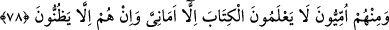
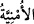
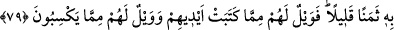

kınamayı hakettiklerine bir işâret vardır. “Bilmiyorlar mı?” cümlesinin öznesi
arkadaşlarını kınayan yahûdîlerdir. Bu sözden maksad, bir tür kınamadır.
Allah, onların gizledikleri herşeyi, yâni küfürlerini ve açıkladıkları her şeyi,
münâfıklık için söylediklerini; îmânlarını açığa vurmalarını hakkıyla bilmektedir.
Öyleyse Allah, recm âyetinde olduğu gibi, onların gizli kalmasını istedikleri şeyleri
vahiy vasıtasıyla peygamberine bildirecek ve böylece “delîl gösterme” ve bu sâyede
susturulmaları gerçekleşecek ve haram kılınan birtakım şeyleri onlara haram kılacaktır.
Öyleyse onların birbirlerini ayıplayıp kınamalarına hiç gerek yoktur.
78. İçlerinde bir takım ümmîler vardır ki, Kitab’ı (Tevrât’ı) bilmezler. Bütün
bildikleri kulaktan dolma şeylerdir. Onlar sadece zan ve tahminde bulunuyorlar.
“Ümmî” kelimesi Arap ümmetine nisbet edilen bir kelimedir. Araplar okuma ve
yazmadan uzak bir toplum olduğu için onlara böyle denmiş, fakat daha sonra okuma
yazma bilmeyen tüm insanlar için kullanılır olmuştur.
Vehim ve kuruntu denilen bu “Emânî” (
) kelimesi dilek anlamına temennî (
); kökünden gelir. “Ümniyye” (
); yâni arzu kelimesinin çoğuludur. Bu bölümün
öncekinden istisnâsı, munkatı istisnâdır. Çünkü bu vehim ve kuruntular, kitapla aynı
cinsten değildirler. Onların bâzı bâtıl arzularıdır. Mânâ: “(Onlar kitabı bilmezler) fakat
bâtıl arzu ve isteklere de sâhibtirler” şeklindedir.
Sâhib oldukları bu bâtıl arzu ve istekler de: Peygamber Efendimiz (s.a.)’ın Tevrât’taki
sıfatlarını değiştirmekle yapmış oldukları iftirâlar; ateşte ancak belli bir müddet
kalacakları yalanı; atalarından nebî olanların onlara şefâat edecekleri hülyâsı ve Cenâb-
ı Hakk’ın onların hatâlarını görmezlikten gelip merhametle muâmele edeceği zannıdır
ki, bunların hiçbirinin sıhhatli bir dayanağı yoktur.
Yahûdîler akîdelerini, kişiyi hiçbir zaman hakîkî ilme götürmeyecek zan ve taklîd
üzerine binâ etmişken, hiç böyle bir topluluktan, temelleri kesin bilgi üzerine oturmuş
bir inanç sistemi olan İslâm’a girmeleri beklenebilir mi?
79. Elleriyle (bir) Kitap yazıp sonra onu az bir bedel karşılığında satmak için “Bu
Allah katındandır” diyenlere yazıklar olsun! Elleriyle yazdıklarından ötürü vay